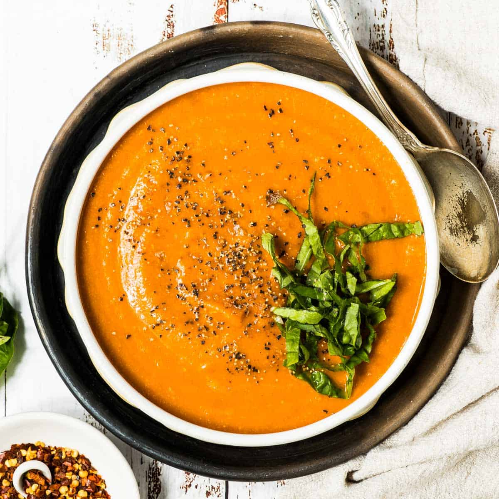

Home
Tomato Soup

Description
Another great classic dish. A transformation of the common tomato into a fine, heartwarming meal. Paires extremely well with a grilled cheese sandwich.
Ingredients
- ¼ cup olive oil
- 1 medium sweet onion diced
- ¾ pound carrots peeled + diced
- 1 medium fennel bulb cored + diced
- ½ teaspoon fine sea salt
- 4 cloves garlic finely chopped
- 1 teaspoon fennel seeds
- 2 tablespoons tomato paste
- 1 quart broth or stock (vegetable or chicken)
- 2 (28-ounce) cans crushed tomatoes
- ½ cup fresh basil leaves
- ½ cup coconut milk refrigerated and water drained
- Toppings: olive oil drizzle, fresh basil or parsley, cracked black pepper, or red pepper flakes for heat.
Steps
- Warm olive oil in a large pot or Dutch oven over medium heat. Add onion, carrots, fennel and good pinch of sea salt. Cook, stirring occasionally, until the vegetables are tender and lightly golden at the edges, 8-12 minutes.
- Stir in garlic and fennel seeds and cook until fragrant, about 30-60 seconds.
- Add tomato paste and cook, stirring, until it darkens slightly, about 1 minute. Splash in ½ cup broth, scraping up any browned bits.
- Pour in the crushed tomatoes and the remaining broth. Season with a pinch more salt. Bring to a gentle boil, reduce to medium-low, and simmer 30 minutes, stirring occasionally.
- Add basil. Carefully blend the soup (immersion blender in the pot, or transfer to a high-speed blender in batches) until silky.
- Stir in coconut milk solids until melted and smooth. Taste and adjust salt if needed.
- Ladle into bowls. Finish with a swirl of olive oil, fresh basil or parsley, cracked black pepper, or red pepper flakes if you like heat.